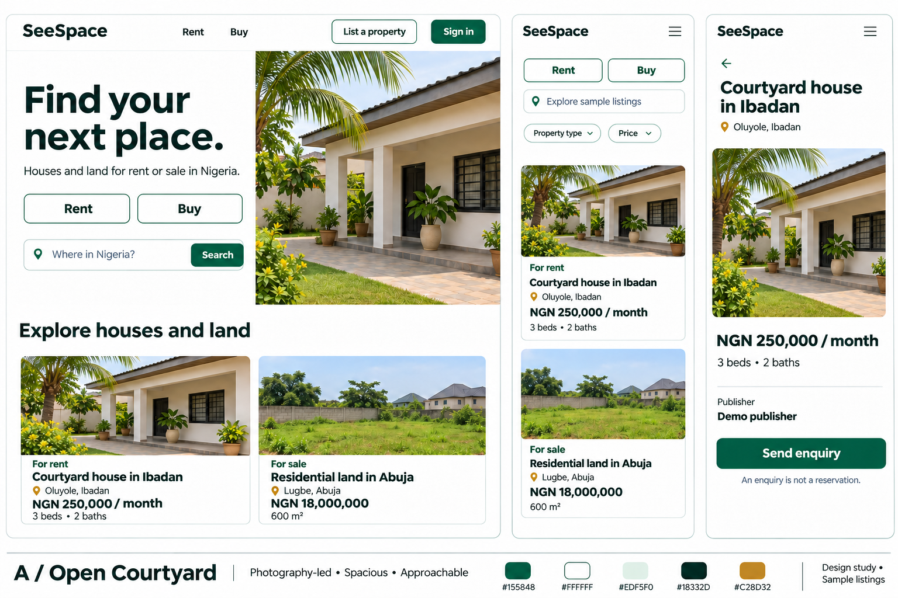
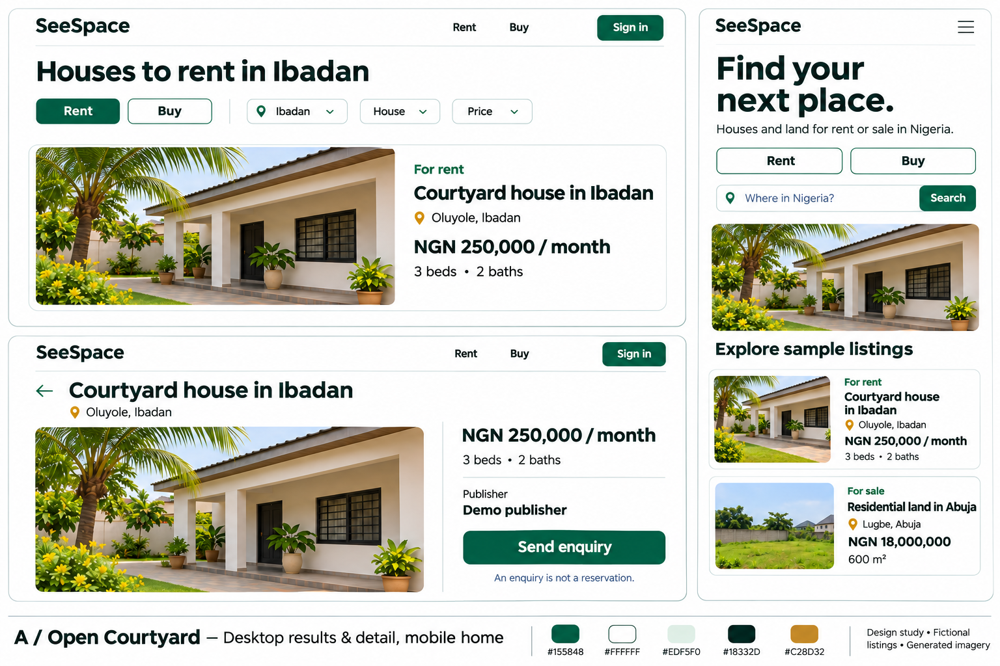
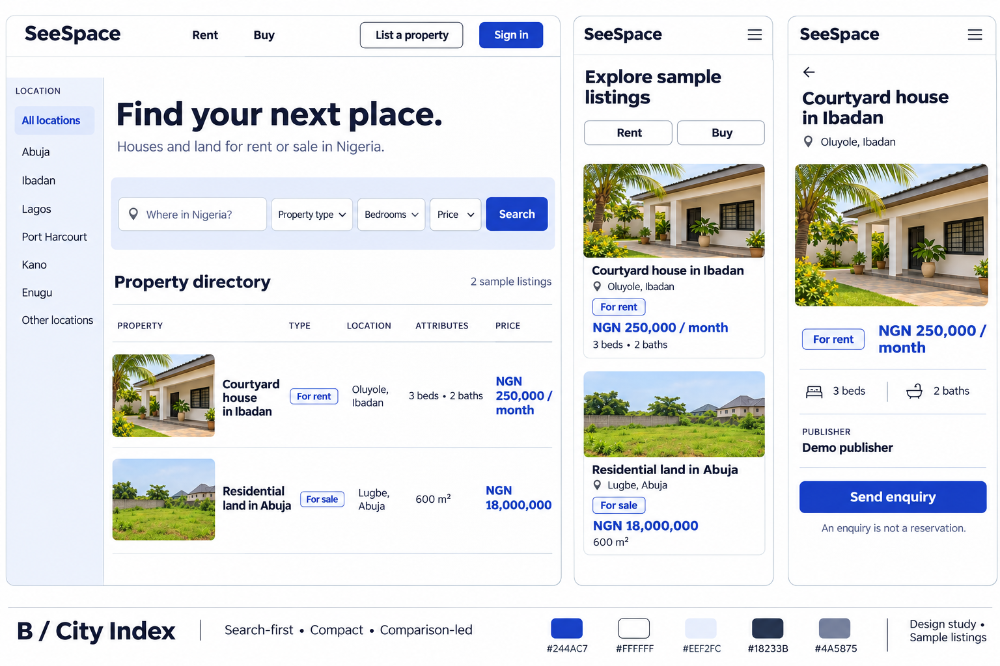
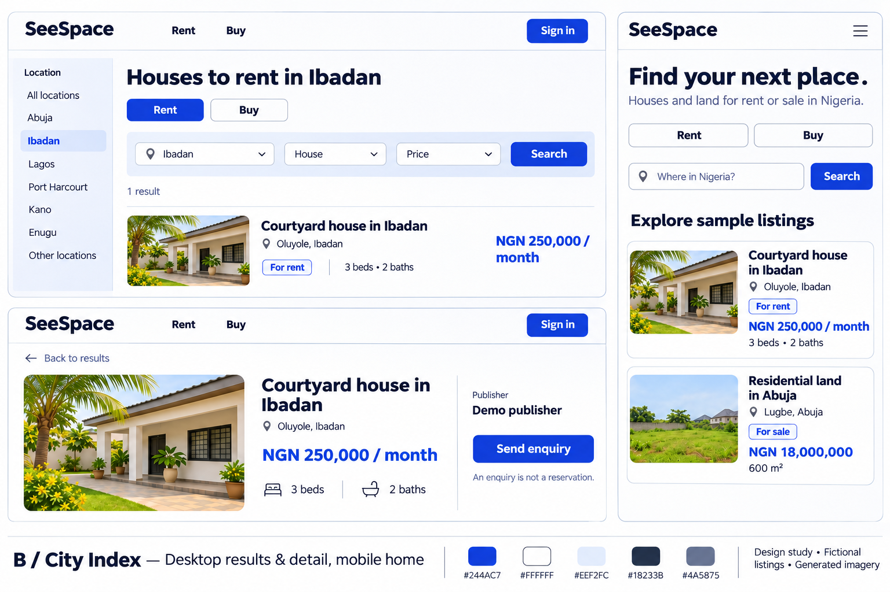

A / Open Courtyard
Large property imagery, a welcoming search-led homepage and room around the important facts. A public experience built for visual discovery.
Tradeoff: more scrolling and image bandwidth. Good photography matters.
Phase 1 visual exploration for a Nigeria-first houses and land marketplace. The same fictional content, two different priorities: spacious discovery or compact comparison.
12 November 2026 · Review candidate · Aminu's selection pending
These are static generated mockups. Buttons inside the images do not work. The application prototype starts only after a direction is selected.
Large property imagery, a welcoming search-led homepage and room around the important facts. A public experience built for visual discovery.
Tradeoff: more scrolling and image bandwidth. Good photography matters.
A compact directory with a location rail, aligned amounts and inventory close to the search controls. Built for frequent comparisons.
Tradeoff: denser content and longer price wrapping. Keep the public shell from feeling administrative.
Recommendation: A. Open Courtyard best supports the brief's welcoming public marketplace. This recommendation does not select it.
Photography leads; purpose and price remain explicit. True white, jade accents and a spacious humanist type treatment. Proposed implementation typeface: Public Sans.


Search and comparison lead. Cobalt highlights, a location rail and smaller inventory imagery create a deliberately denser rhythm. Proposed implementation typeface: Source Sans 3.


Oluyole, Ibadan
For rent · NGN 250,000 /
month
3 bedrooms · 2 bathrooms
Lugbe, Abuja
For sale · NGN 18,000,000 total
600
m² · No residential attributes
Generated imagery, invented properties and prices. No real owners or contact details. These visual-study aliases do not replace the source brief's SS101–SS106 fixtures. NGN, monthly rent and city coverage are illustrative; policy decisions remain open.
Aminu selects the visual direction before M2 begins. Palette, type and density remain proposals. No full prototype, application logic or deployment is authorized by this review.